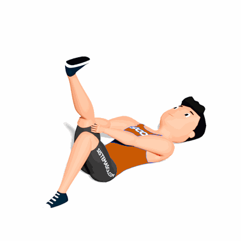

Rotação de Tornozelo

O exercício tem como objetivo trabalhar a mobilidade do tornozelo. Auxiliando nas atividades físicas e atividades diárias.
Ficha Técnica
Tipo: Mobilidade
Grupo Muscular: Perna
Aparelho: Nenhum
Músculos: Nenhum
Como realizar
- Deitado de barriga para cima;
- Mantenha uma das pernas com o joelho flexionado e apoiado ao chão;
- Eleve a outra perna e segure ela com as mãos;
- Com o pé que está elevado, realize uma rotação alternando entre sentido horário e sentido anti-horário;
- Após finalizar as repetições, realize os movimentos com o outro pé.
 RC STORE
RC STORE